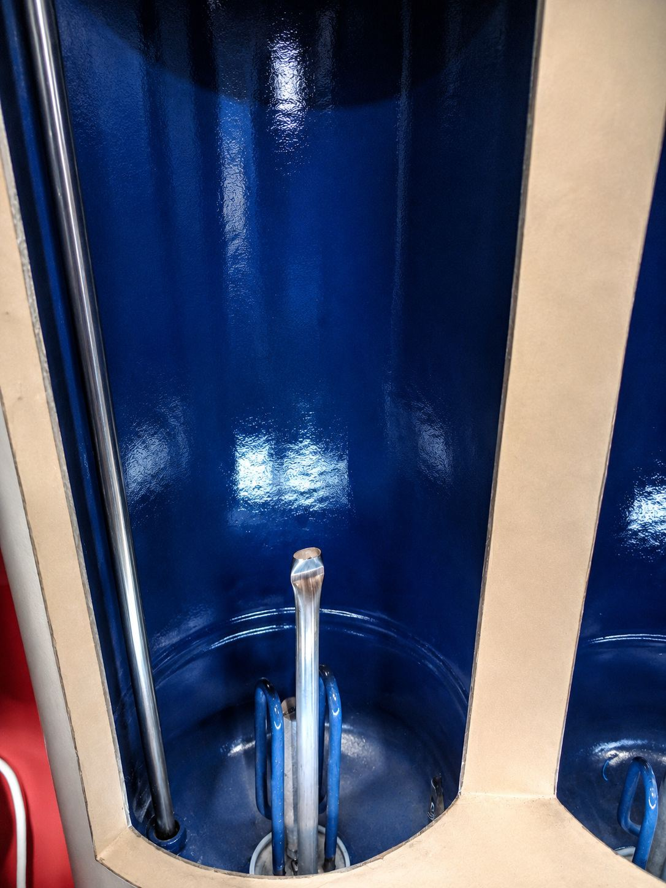
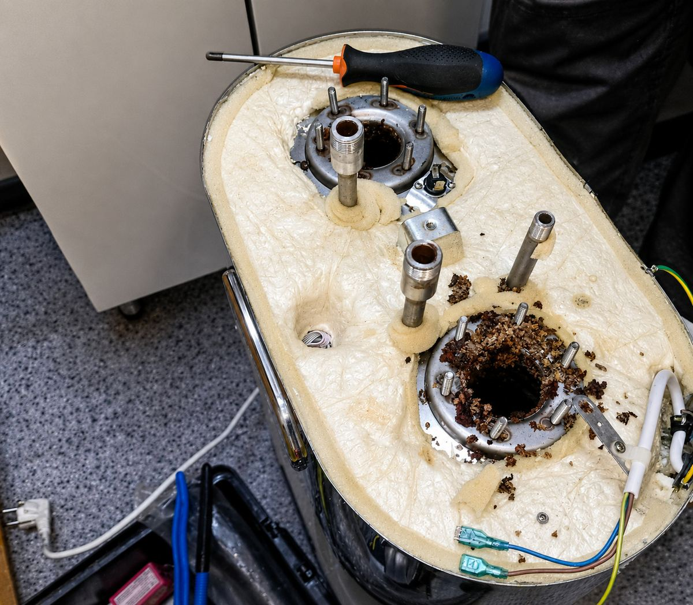
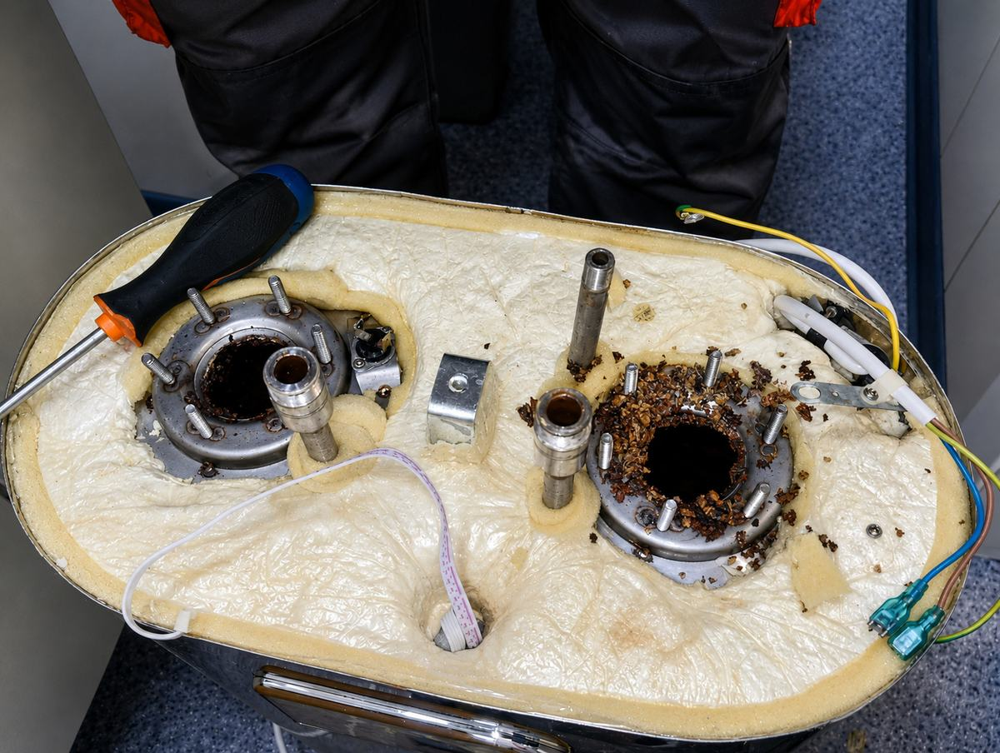

две внутренние ёмкости
WH4 · фотокейс
Разборка двухбакового водонагревателя — фотокейс
Двухбаковая конструкция требует раздельной проверки секций: износ и герметичность двух фланцев могут отличаться.

Двухбаковая конструкция требует раздельной проверки секций: износ и герметичность двух фланцев могут отличаться.
Как читать фотокейс
Фотография фиксирует состояние объекта, но не доказывает правильность монтажа и не заменяет диагностику. Подписи нейтральны до подтверждения происхождения кадров.
две внутренние ёмкости
два фланцевых узла
раздельная проводка
неодинаковая коррозия посадочных мест
Что доказывает серия: раздельный доступ к узлам плоской двухбаковой конструкции. Результат ремонта подтверждают проверкой обеих ступеней нагрева и отсутствием течи; фотографии сами по себе не определяют электрическую неисправность.

Двухсекционный водонагреватель — общий вид
Дублирует более сильный PHOTO_021
PHOTO_017

Крупный план синей емкости
Крупный план без понятного самостоятельного сюжета
PHOTO_022

Два фланца после разборки
Два фланца одной модели
PHOTO_044

Коррозия двух посадочных мест
Коррозия двух посадочных мест
PHOTO_046
Пришлите общий кадр, шильдик и крупный план проблемы — это поможет определить сценарий до выезда.
Серия сгруппирована по одному техническому сюжету. Пока происхождение не подтверждено как работа MosPochin, изображения подписаны нейтрально.
Фото помогает квалифицировать заявку, но причина подтверждается измерениями, разборкой и проверкой конкретной модели.
Общий вид прибора, шильдик, место течи или узел подключения, а также короткое видео звука либо индикации.